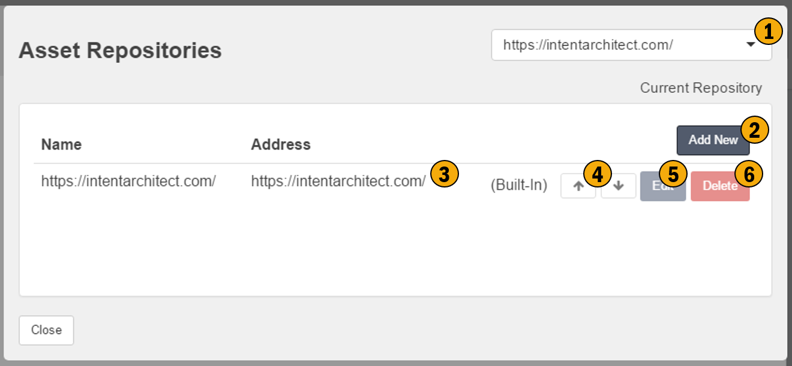

Repository Configuration
This screen allows you to configure the Repositories for your application. These repositories are the sources of Application Templates and Modules. Repositories can be represented by a service or a physical folder on your hard drive.

1. Current Repository
This control allows you to change / choose your default repository
2. Add New
Allows you to add new repositories, i.e. new sources of Applications Templates and Modules.
3. Address
This is Uri for the repository, it can either be in the form of a URL to a service or a folder location on your hard drive.
4. Ordering
These arrows allow you to order the list of repositories in order of preference, with the top most repository being the most prefered. Whenever cascading actions / searches must be performed across the repositories they will be performed in the order you have specified here.
5. Edit
Modify the details of the repository.
6. Delete
Remove the repository.